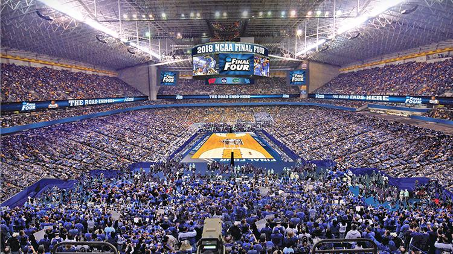

NIL Index — Est. 2026
FOLLOW
THE MONEY
IN COLLEGE
ATHLETICS
NIL changed college sports in 2021. The money has been flowing ever since — but nobody has put it all in one place. NIL Index tracks compensation across sports, conferences, and schools so athletes, administrators, and researchers can actually see what's going on.


$1B+
NIL Market Size